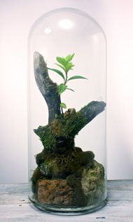

**Final Project Proposal**
---
Student name: Buisson Nicolas
Sciper number: 285607
---
The scene takes place in a post-apocalyptic world, where all plants have died on earth, and robots are every where. But there's one last plant, one possible outcome, a little seed growing, from which everything could start again. So the scene consists in a table lighted by a little light source (visible on the image), in a rather dark room, with a plant on the table in a container (in some kind of glass bawl). Finally, a little robot is looking at this strange little green plant. This robot will be the second light source, with some LEDs on its body, and some light coming out of his eyes.
Here's a rough idea for the last plant (but there will only be a plant alone):

So given this scene, I will have to add the following functionnalities to the code:
- Homogeneous participating media, in order to render the plant (thin layers) (30p)
- Depth of field, to have the camera center the attention on the plant (10p)
- Textures (a basic thing which has to be added) (10p)
- BSDF for (rough) conductors, to render metals (10p)
- Anisotropic BSDF, for brushed metals notably (10p)
- My own mesh design (for the plant notably, but also most of the scene) (10p)
Total: 80p for the scene.